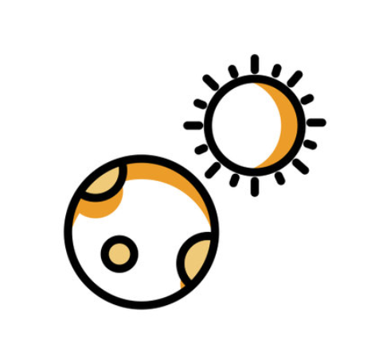

Erleichtertes Lernen Mithilfe des KnowledgeNoodle KI-Tutor hast du von nun an keinerlei Schwierigkeiten mehr beim Lernen und erhälst
fantastische Unterstützung bei schwierigen Aufgaben.
Personalisierte Kommunikation Der KnowledgeNoodle KI-Tutor passt sich an deine Bedürfnisse an und liefert maßgeschneiderte Antworten
auf deine Fragen. Er richtet sich nach deinen Präferenzen und liefert kurze prägnante, als auch detaillierte Erklärungen.

24/7 Verfügbarkeit KnowledgeNoodle ist rundum die Uhr verfügbar, egal wie früh oder spät es ist. Wenn dein Lehrer
oder Professor nicht erreichbar ist, wende dich an den KnowledgeNoodle KI-Tutor. Er steht dir von früh bist spät zur Verfügung
und beantwortet jede noch so knifflige Frage.